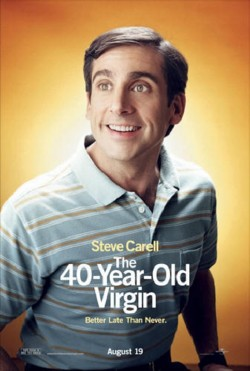

Ano: 2008
País: EUA
Ficha Técnica:
Título Original: The Love Guru
Gênero: Comédia
Estúdio: Paramount Pictures
Direção: Marco Schnabel
Roteiro: Mike Myers, Graham Gordy
Produção: Mike Myers, Gary Barber
Elenco:
Mike Myers - Pitka
Jessica Alba - Jane Bullard
Justin Timberlake - Jacques Grande
Meagan Good - Prudence
Ben Kingsley - Guru Tugginmypudha
Jessica Simpson - Cameo
Verne Troyer - Treinador Cherkov
Romany Malco - Darren Roanoke
Omid Djalili - Guru Satchabigknoba
Telma Hopkins - Lillian
|
Sinopse:
A comédia "O Guru do Amor", a primeira com Mike Myers
como protagonista desde o terceiro "Austin Powers", promete
levar multidões aos cinemas. No filme, Myers vive o guru do
amor Pitka, estadunidense que foi abandonado quando criança
às portas de um retiro na Índia e criado por gurus.
Ele retorna aos EUA atrás da fama e da fortuna do mercado da
auto-ajuda. Um dos seus "pacientes" é um astro do
hóquei, Romany Malco ("O Virgem de 40 Anos"), que
brigou com a mulher e começa a cair no rendimento. Justin Timberlake
faz Jacques Grande, astro de uma equipe concorrente que se envolve
com a mulher do cara. Jessica Alba ("Sin City", "Quarteto
Fantástico") interpreta a dona do time de hóquei
e Verne Troyer, o Mini-Me, também está no elenco - ele
será o técnico da equipe. Marco Schnabel estréia
na direção. Depois que Sacha Baron Cohen brincou com
o povo do Casaquistão em "Borat", o novo filme de
Mike Myers mostra os líderes espirituais norte-americanos.
Na comédia "O Guru do Amor", o personagem de Myers,
o Guru Pitka, é uma mistura dos movimentos espirituais ocidentais,
sem fazer referência a nenhuma religião específica.
Ele é conhecido como “o segundo melhor guru da Índia”
e usa barba e cabelos longos, além de vestir uma túnica.
“Prepare-se para atingir sua iluminação e solte
a franga”, diz o guru em uma das mensagens disponíveis
em sua página do MySpace, na qual ele mistura fatos reais com
tolices, como posições impossíveis de yoga. Ele
ainda toca músicas bobas na cítara e tem como seu mantra
“Mariska Hargitay”. Pitka se identifica como “professor
espiritual afiliado à fé de ninguém” e
tem o mesmo charme patético de Austin Power, outro personagem
de Myers.
|
|

Ano: 2005
País: EUA
Ficha Técnica:
Título Original: The 40 Year Old Virgin
Estúdio: Universal Pictures (Distribuição, Produção);
Apatow Productions (Produção)
Elenco: Steve Carell (Andy Stitzer); Catherine Keener (Trish); Paul
Rudd (David); Romany Malco (Jay); Seth Rogen (Cal); Elizabeth Banks
(Beth); Leslie Mann (Nicky); Jane Lynch (Paula); Gerry Bednob (Mooj);
Shelley Malil (Haziz); Kat Dennings (Marla); Jordan Masterson (Mark);
Chelsea Smith (Julia); Erica Vittina Phillips (Jill); Marika Dominczyk
(Bernadette); Mindy Kaling (Amy)e Mo Collins (Gina).
Equipe Técnica: Judd Apatow (Direção); Steve
Carell e Judd Apatow (Roteiro); Judd Apatow, Shauna Robertson e Clayton
Townsend (Produção); Lyle Workman (Música); Jack
N. Green (Fotografia); Jackson De Govia (Desenho de Produção);
Tom Reta (Direção de Arte); Debra McGuire (Figurino);
Brent White (Edição).
|
|
Sinopse:
Andy Stitzer (Steve Carell) é um homem de 40 anos que possui
um bom emprego, um apartamento próprio e mantém uma coleção
de bonecos e revistas em quadrinhos. Porém, apesar da idade,
Andy permanece virgem. Ele nem dá muita importância para
isso, mas seus amigos não se conformam. Decididos a fazer com
que Andy perca a virgindade, eles tentam fazer com que Trish (Catherine
Keener), uma mãe solteira que também tem 40 anos, se torne
sua parceira.
|
|
Ano: 2008
País: EUA
Ficha Técnica:
Título Original: Superhero Movie
Gênero: Comédia
Duração: 85 min
Estúdio: Imagem Filmes
Direção: Craig Mazin
Roteiro: Craig Mazin
Produção: Robert K. Weiss, David Zucker, Craig Mazin,
Bob Weinstein, Harvey Weinstein
Elenco:
Leslie Nielsen - Tio Albert
Drake Bell - Rick Riker / Dragonfly
Sara Paxton - Jill Johnson
Christopher McDonald - Lou Landers / Hourglass
Kevin Hart - Trey
Marion Ross - Aunt Lucille
Ryan Hansen - Lance Landers
Keith David - Chefe de Polícia
Brent Spiner - Dr. Strom
Robert Joy - Dr. Hawking
|
|
Sinopse:
Finalmente os caras de "Todo Mundo em Pânico" usaram
seus poderes especiais para parodiar os filmes de super-heróis
e lançam "Super-Herói: O Filme". O melhor filme
de super-heróis de todos os tempos! (Sem contar todos os outros!).
Após ser picado por uma libélula geneticamente alterada,
Rick Riker ganha habilidades sobre-humanas. e decide então usar
seu superpoderes para o bem e transforma-se em o Libélula. Seu
caminho cruza com o supervilão Ampulheta que usa seu poder para
roubar a fonte de vida das pessoas na sua busca incansável pela
imortalidade. Será que Libélula conseguirá com
sua força, velocidade e uniforme inacreditavelmente apertado
impedir o Ampulheta e salvar o mundo? Mais importante ainda será
que conseguiremos parar de rir para torcer pelo nosso super-herói?
EXTRAS: Craig Mazin, diretor do filme, teve a mais pura das motivações
para fazer o filme: “Eu gosto de fazer o público rir. Realmente
essa é a única razão para fazer estes filmes. Estes
filmes são sobre entrar no cinema e rir incessantemente ao longo
de oitenta ou noventa minutos”. É claro que existe arte
para parodiar um gênero. David Zucker (produtor), que dirigiu
"Apertem o Cinto, o Piloto Sumiu", "Corra que a Polícia
Vem Aí", "Corra que a Polícia Vem Aí
2 ½" e "Todo Mundo Em Pânico 3 e 4", percebe
que o público reage de maneira interessante ao tipo muito específico
de humor oferecido em um filme de paródia. “O público
compartilha uma referência geral. Todos vão a filmes de
super-heróis, e gostam deles”, diz Zucker deste gênero
específico.
|
|
Ano: 2008
País: EUA
Ficha Técnica:
Título Original: You Don't Mess With the Zohan
Gênero: Comédia
Duração: -
Estúdio: Columbia Pictures
Direção: Dennis Dugan
Roteiro: Judd Apatow, Robert Smigel, Adam Sandler
Produção: Jack Giarraputo, Adam Sandler
Elenco:
Adam Sandler - Zohan
Rob Scheider - Salim
John Turturro - Fantasma
Emmanuelle Chriqui - Dalia
Nick Swardson - Michael
Lainie Kazan - Gail
Ido Mosseri - Oori
Dave Matthews - James
Michael Buffer - Walbridge
Charlotte Rae - Mrs. Greenhouse
|
Sinopse:
O Agente israelense Zohan Dvir (Adam Sandler) – conhecido como
O Zohan – é o contra-terrorista mais famoso de seu país.
Extremamente experiente, aparentemente indestrutível, Zohan é
igualmente fã das mulheres como também mestre em liquidar
seus inimigos, incluindo seu rival, o terrorista palestino Fantasma
(John Turturro). Mas Zohan possui um segredo… apesar de amar seu
país, ele está cansado de tanta briga, e sonha com a oportunidade
de se afastar temporariamente do Exército e expressar melhor
sua criatividade virando cabeleireiro. Entretanto, enquanto estiver
lutando contra o terrorismo, o sonho de Zohan torna-se impossível
de ser realizado, o que o leva a dormir noites a fio sobre imagens de
1987 do livro de estilo de Paul Mitchell, que ele mantém escondido
em seu quarto. Zohan consegue a sua chance quando Fantasma ressurge.
Ao invés de acabar com ele, Zohan finge a sua própria
morte e escapa, deixando Fantasma feliz da vida acreditando que finalmente
conseguiu destruir Zohan. De malas prontas em um avião para Nova
York, apenas com um sonho e algumas peças de roupa na bagagem,
Zohan se esconde num container com dois cães, Scrappy e Coco.
Apesar de ele querer deixar para o passado sua vida de contra-terrorista,
rapidamente descobre que não é tão fácil
assim escapar das suas raízes. Enquanto velhos e novos inimigos
tentam destruí-lo, todos vão acabar aprendendo uma mesma
lição: ninguém deve se meter com Zohan. |
|

Ano: 2007
País: EUA
Ficha Técnica:
Título Original: The Heartbreak Kid
Gênero: Comédia, Romance
Duração: 107 min
Estúdio: Paramount Pictures
Direção: Bobby Farrelly, Peter Farrelly
Roteiro: Scot Armstrong, Leslie Dixon
Produção: Ted Field, Bradley Thomas
Elenco:
Ben Stiller - Eddie Cantrow
Michelle Monaghan - Miranda
Jerry Stiller - Doc
Malin Akerman - Lila
Carlos Mencia - Tio Tito
Rob Corddry - Mac
Stephanie Courtney - Gayla
Ali Hillis - Jodi
Kathy Lamkin - Mãe da Lila
Nicol Paone
|
Sinopse:
Solteiro e com 40 anos recém-completados, o dono de uma loja
de artigos esportivos começa a se perguntar se está sendo
muito exigente em relação às mulheres que conhece.
Sentindo que o mundo inteiro está namorando menos ele, e pressionado
por seu libidinoso pai septuagenário Doc e pelo subordinado amigo
casado Mac, Eddie Cantrow (Ben Stiller, de "Uma Noite no Museu")
está pronto para um relacionamento. Tudo o que precisa agora
é de uma garota. Depois de evitar um aparente assalto nas ruas
de São Francisco, Eddie conhece Lila e os dois rapidamente embarcam
em um romance relâmpago, que leva a um precipitado pedido de casamento.
No caminho para a lua-de-mel no México, Eddie descobre que a
esposa, além do rosto angelical, tem também um linguajar
pesado e um apetite quase insaciável por sexo hilariamente vigoroso.
Quando eles chegam ao resort, Lila já passou de uma gentil e
doce companheira para uma grosseirona louca por tequila e dona de um
passado sórdido, fazendo com que Eddie se pergunte em que se
meteu. Com Lila recusando-se a sair do quarto do hotel devido a uma
forte queimadura de sol, Eddie encontra consolo no bar, onde conhece
Miranda, que não faz idéia de que ele esteja em lua-de-mel.
Enquanto se apaixona pelo encanto singelo de Miranda, Eddie tenta ao
máximo lidar com as duas mulheres. Mas uma série de confusões
leva a um loucamente divertido confronto entre um homem, duas mulheres
e uma água-viva.
|
|
|